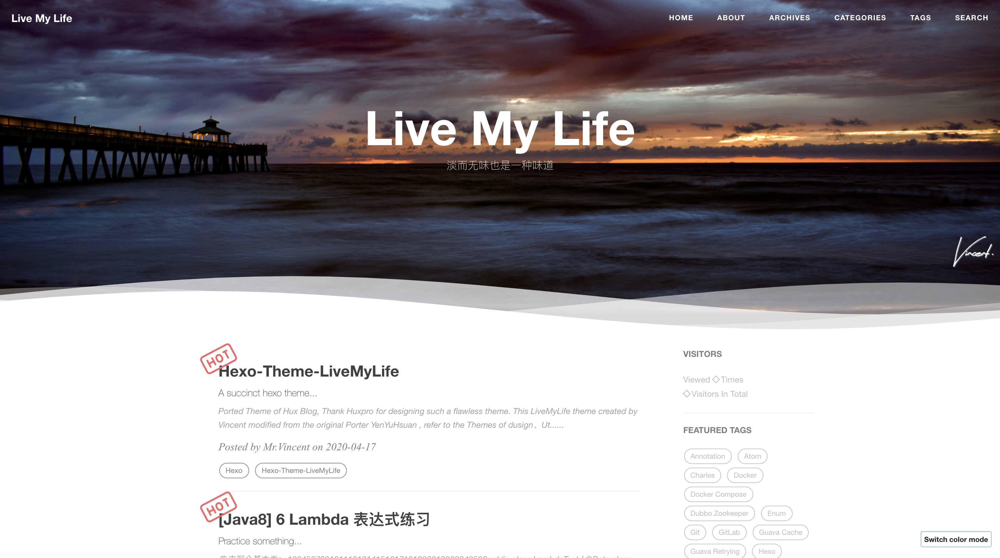
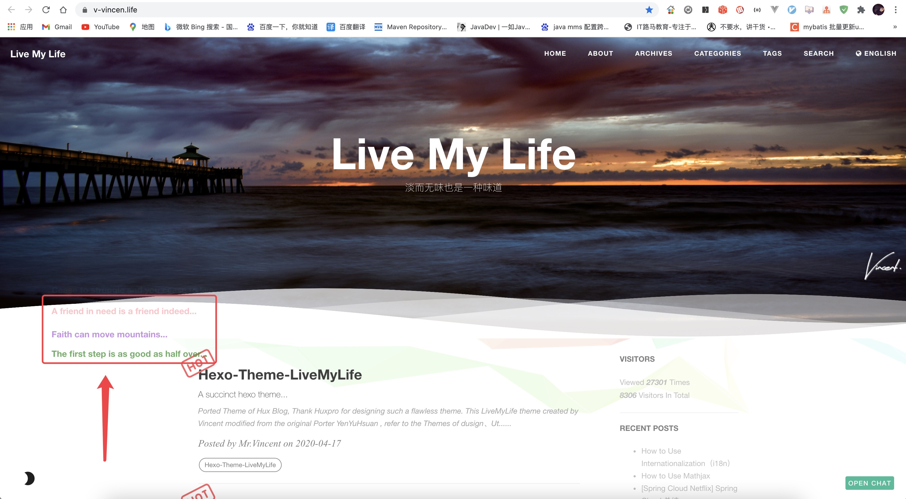

Hexo-Theme-LiveMyLife
Ported Theme of Hux Blog, Thank Huxpro for designing such a flawless theme.
This LiveMyLife theme created by Vincent modified from the original Porter YenYuHsuan , refer to the Themes of dusign、Utone, Thanks dusign、Utone.
Repo
Github Repo: https://github.com/V-Vincen/hexo-theme-livemylife
Gitee Repo: https://gitee.com/V_Vincen/hexo-theme-livemylife
View LiveMyLife Blog ➾

Quick Start
I publish the whole project for your convenience, so you can just follow the instruction down below, then you can easily customiz your own blog!
Let’s begin!!!
Install Node.js and Git
#For Mac
brew install node
brew install git
Windows: Download & install Node.js. -> Node.js
Windows: Download & install Git. -> Git
Install Hexo
$ npm install -g hexo-cli
What is Hexo?
Hexo is a fast, simple and powerful blog framework. You write posts in Markdown (or other markup languages) and Hexo generates static files with a beautiful theme in seconds.
Setup your blog
$ hexo init blog
More Commands -> Hexo Commands
Theme Usage
Init
cd blog
rm -rf scaffolds source themes _config.landscape.yml _config.yml package.json yarn.lock #just keep node_modules
git clone https://github.com/V-Vincen/hexo-theme-livemylife.git
mv hexo-theme-livemylife/* ./
rm -rf hexo-theme-livemylife
npm install
Set Theme
Modify the value of theme: in _config.yml
# Extensions
## Themes: https://hexo.io/themes/
## Plugins: https://hexo.io/plugins/
theme: livemylife
Start the Server
hexo generate # or hexo g
hexo server # or hexo s
Starts a local server. By default, this is at http://localhost:4000/.
More Commands -> Hexo Commands
Configuration
Modify _config.yml file with your own info, Especially the section:
Site
Replace the following information with your own.
# Site
title: Live My Life
subtitle: 淡而无味也是一种味道
author: Mr.Vincent
timezone:
Internationalization (i18n)
You can use internationalization to present your site in different languages. -> Docs：How to Use Internationalization（i18n）
# Internationalization (i18n) Setting
language: # At present, only en、cn and tw are supported. You can customize the language，refer to `languages/en.yml`.
- en
- cn
langselect:
enable: true # If open, it will automatically generation lang-select button.This button can jump in articles in different languages, but the articles must have the same name.
options: # langselect button display options
en: English
cn: 简体中文
# tw: 正體中文
i18n_dir: :lang
permalink: :lang/:title/
new_post_name: :lang/:title.md
# hexo-generator-i18n config
## Docs: https://github.com/xcatliu/hexo-generator-index-i18n
index_generator:
per_page: 10
pagination_dir: page
path: ''
order_by: -date
archive_generator:
enabled: false
per_page: 10
yearly: true
monthly: true
daily: false
order_by: -date
English preview:

Chinese preview:

CDN Settings
JsDelivr is A free CDN for Open Source fast、reliable and automated. How to use Jsdelivr? -> Docs：免费 CDN 提速 Github 静态资源访问
# CDN Setting
# Docs: https://www.jsdelivr.com/?docs=gh
# If Github Pages deploy，you can ues jsdelivr settings
#
jsdelivr:
jsdelivr_url: https://cdn.jsdelivr.net/gh/
github_username: V-Vincen
Note: The theme of Hexo-theme-livemylife has a large number of css、js and images, in order to improve access speed, the theme for all of the resource files are made JsDelivr CDN. But only for Github Pages deployment. -> Docs：How to apply JsDelivr CDN in Hexo-theme-livemylife Theme
Site Settings
Put customized pictures in img directory.
# Site settings
SEOTitle: JavaDev | 一如Java深似海
email: hexo-theme-livemylife@mail.com
description: "It's an IT blog..."
keyword: "Java,v-vincen,v-vincen,livemylife,IT blog,Blog"
header-img: img/header_img/newhome_bg.jpg
archives-img: img/header_img/archive_bg2.jpg
Favicon Settings
favicon: img/avatar/favicon.jpg
Signature Settings
Copy your signature image to <root>/img/signature and modify the _config.yml.
signature: true # show signature
signature-img: img/signature/<your-signature>
How to create signature -> Free Online Signature
Wave Settings
# Wave settings
wave: true
Example:

SNS Settings
If you don’t want to display it, you can delete it directly.
# SNS settings
# RSS: true
github_username: V-Vincen
twitter_username: V_Vincen_
instagram_username: V_Vincen_
# facebook_username: yourAccount
# linkedin_username: yourAccount
# zhihu_username: yourAccount
weibo_username: WVincen
Sidebar Settings
Copy your avatar image to <root>/img/avatar and modify the _config.yml:
sidebar: true # whether or not using Sidebar.
sidebar-about-description: "I don't know where I am going ,but I am on my way..."
sidebar-avatar: img/avatar/vincnet.jpg # use absolute URL, seeing it's used in both `/` and `/about/`
widgets:
- visitor # busuanzi: https://busuanzi.ibruce.info/
- featured-tags
- short-about
- recent-posts
- friends-blog
- archive
- category
# widget behavior
## Archive
archive_type: 'monthly'
show_count: true
## Featured Tags
featured-tags: true # whether or not using Feature-Tags
featured-condition-size: 0 # A tag will be featured if the size of it is more than this
## Friends
friends: [
{
title: "V_Vincen",
href: "https://v-vincen.life/"
},{
title: "Teacher Ye",
href: "http://teacherye.com/"
}
]
Comment Settings
Hexo-Theme-LiveMyLife temporarily supports three Comments. I use gitalk comment system.
Gitalk
Gitalk is a modern comment component based on GitHub Issue and Preact. See Gitalk for detailed configuration method.
# Gitalk Settings
# Doc: https://github.com/gitalk/gitalk/blob/master/readme-cn.md
gitalk:
owner: # 'GitHub repo owner'
admin: # ['GitHub repo owner and collaborators, only these guys can initialize github issues']
repo: # 'GitHub repo'
clientID: # 'GitHub Application Client ID'
clientSecret: # 'GitHub Application Client Secret'
perPage: 10 # Pagination size, with maximum 100.
pagerDirection: last # Comment sorting direction, available values are last and first.
createIssueManually: false # By default, Gitalk will create a corresponding github issue for your every single page automatically when the logined user is belong to the admin users. You can create it manually by setting this option to true
language: en # Localization language key, en, zh-CN and zh-TW are currently available.
maxCommentHeight: 250 # An optional number to limit comments' max height, over which comments will be folded.Default 250.
proxy: https://cors-anywhere.azm.workers.dev/https://github.com/login/oauth/access_token # GitHub oauth request reverse proxy for CORS. For example, the demo url is 'https://cors-anywhere.herokuapp.com/https://github.com/login/oauth/access_token'.You should deploy your own proxy url as in this issue https://github.com/gitalk/gitalk/issues/429.
Gitment
Gitment is a comment system based on GitHub Issues, which can be used in the frontend without any server-side implementation. See Gitment for detailed configuration method.
## Gitment Settings
## Doc: https://github.com/imsun/gitment
gitment:
owner: # Your GitHub ID. Required.
repo: # The repository to store your comments. Make sure you're repo's owner. Required.
client_id: # GitHub client ID. Required.
client_secret: # GitHub client secret. Required.
desc: # An optional description for your page, used in issue's body. Default ''.
perPage: 10 # An optional number to which comments will be paginated. Default 20.
maxCommentHeight: 250 # An optional number to limit comments' max height, over which comments will be folded. Default 250.
Disqus
If you want use Disqus, you must have a circumvention (proxy, clime over the firewall) technology.
# Disqus settings
disqus_username: your-disqus-ID
Analytics Settings
How to config analytics? -> Docs：Analytics and Sitemap Settings
# Analytics settings
# Google Analytics
ga_track_id: UA-xxxxxx-xx # Format: UA-xxxxxx-xx
# Baidu Analytics
ba_track_id: ba_track_id
Sitemap Settings
How to config sitemap? -> Docs：Analytics and Sitemap Settings
# Google sitemap
sitemap:
path: sitemap.xml
# Baidu sitemap
baidusitemap:
path: baidusitemap.xml
baidu_push: true
Go to top icon Setup
My icon is using point, you can change to your own icon at sourcre/css/images.
Post tag
You can decide to show post tags or not.
home_posts_tag: true
Example:

Markdown render
My markdown render engine plugin is hexo-renderer-markdown-it.
# Markdown-it config
## Docs: https://github.com/celsomiranda/hexo-renderer-markdown-it/wiki
markdown:
render:
html: true
xhtmlOut: false
breaks: true
linkify: true
typographer: true
quotes: '“”‘’'
Install Mathjax
To install Mathjax, please click How to Use Mathjax for a detailed tutorial.
Anchorjs Settings
And if you want to change the header anchor ‘❡’, you can go to layout/_partial/anchorjs.ejs to change it. How to use anchorjs, see AnchorJS for detailed examples.
# Anchorjs Settings
anchorjs: true # if you want to customize anchor. check out line:26 of `anchorjs.ejs`
async("//cdn.bootcss.com/anchor-js/1.1.1/anchor.min.js",function(){
anchors.options = {
visible: 'hover',
placement: 'left',
icon: '❡'
// icon: 'ℬ'
};
anchors.add().remove('.intro-header h1').remove('.subheading').remove('.sidebar-container h5');
})
Article Top
# article top
top: true
Hexo-theme-livemylife has added the article top function, just add sticky: number configuration to your markdown notes, articles are sorted by this number.
Example:

WordCount Settings
A Word Count Plugin for Hexo. See WordCount for detailed configuration method.
# Dependencies: https://github.com/willin/hexo-wordcount
# Docs: https://www.npmjs.com/package/hexo-wordcount
wordcount: true
Busuanzi Settings
Busuanzi is a website traffic statistics plugin. How to use Busuanzi, see Busuanzi for detailed examples.
## Dependencies: https://busuanzi.ibruce.info/
## Docs: https://ibruce.info/
busuanzi: true
Top scroll progress
# top scroll progress
scroll: true
Tip
tip:
enable: true
copyright: Say what you think... # If the copyright is blank, the default value will be used.
Social Share Post
#Docs: https://github.com/overtrue/share.js
share: true
Viewer Config
Viewer is a simple jQuery image viewing plugin. Let us first look at a demo. See Viewer for detailed configuration. If you want to modify the options of Viewer, you can go to sourcre/js/viewer/pic-viewer.js to change it.
# Viewer config
viewer: true
Theme Color Config
Hexo-Theme-LiveMyLife temporarily supports two themes color.
# ThemeColor config
themecolor:
enable: true
mode: dark # themecolor mode light or dark, default light
Light theme preview:

Dark theme preview:
Mouseclick Config
# Mouseclick config
mouseclick:
enable: true
content:
- The first step is as good as half over...
- Laugh and grow fat...
- Man proposes God disposes...
- When all else is lost the future still remains...
- Wasting time is robbing oneself...
- Sharp tools make good work...
- Cease to struggle and you cease to live...
- A friend in need is a friend indeed...
- Faith can move mountains...
color:
- '#9933CC'
- '#339933'
- '#66CCCC'
- '#FF99CC'
- '#CCCCFF'
- '#6666CC'
- '#663399'
- '#66CC99'
- '#FF0033'
Mouseclick preview:

Ribbon Config
ribbonDynamic: true
Ribbon preview:

BgLineCanvas Config
bglinecanvas: true # The special effects will take up a lot of cpu resorces, please open it carefully.
BgLineCanvas preview:

Search Settings
# Dependencies: https://github.com/V-Vincen/hexo-generator-zip-search
search:
enable: true
path: search.json
zipPath: search.flv
versionPath: searchVersion.json
field: post
# if auto, trigger search by changing input
# if manual, trigger search by pressing enter key or search button
trigger: auto
# show top n results per article, show all results by setting to -1
top_n_per_article: 1
Gitter
Gitter is a chat and network platform that helps manage, develop and connect communities through messages, content and discovery. See Gitter for detailed configuration method.
## Docs:https://gitter.im/?utm_source=left-menu-logo
##
gitter:
room: your-community/your-room
Deployment
Replace to your own repo!
deploy:
type: git
repo: https://github.com/<yourAccount>/<repo> # or https://gitee.com/<yourAccount>/<repo>
branch: <your-branch>
Hexo Basics
Some hexo command:
hexo new post "<post name>" # you can change post to another layout if you want
hexo clean && hexo generate # generate the static file
hexo server # run hexo in local environment
hexo deploy # hexo will push the static files automatically into the specific branch(gh-pages) of your repo!
Have fun ^_^
Please Star this Project if you like it! Follow would also be appreciated! Peace!
版权声明：本博客所有文章除特殊声明外，均采用 CC BY-NC 4.0 许可协议。转载请注明出处 yukun的博客！